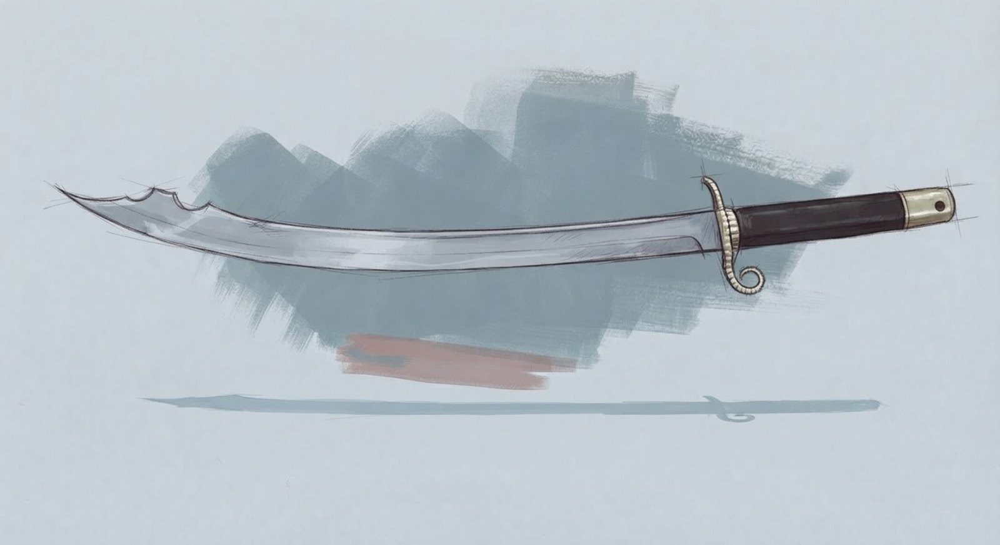

Fantasy & superhero/The Beastmaster (1982)/Dar’s Sword

Weapon / Fantasy
Dar’s
Sword
The sword Dar carries from his father in The Beastmaster (1982).
First seenThe Beastmaster, 1982
NameNone on record
Sword makerVictor Anselmo